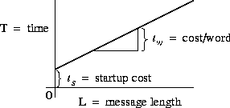

![[DBPP]](pictures//asm_color_tiny.gif)


![[Search]](pictures//search_motif.gif)
A good performance model, like a good scientific theory, is able to explain available observations and predict future circumstances, while abstracting unimportant details. Amdahl's law, empirical observations, and asymptotic analysis do not satisfy the first of these requirements. On the other hand, conventional computer system modeling techniques, which typically involve detailed simulations of individual hardware components, introduce too many details to be of practical use to parallel programmers. In the rest of this chapter, we introduce performance modeling techniques that provide an intermediate level of detail. These techniques are certainly not appropriate for all purposes: they are specialized for the multicomputer architecture and do not take into account, for example, cache behavior. However, they have been proven useful in a wide range of parallel algorithm design problems. The chapter notes provide references to other approaches.
The performance models considered here specify a metric such as execution time T as a function of problem size N , number of processors P , number of tasks U , and other algorithm and hardware characteristics:
We define the execution time of a parallel program as the time that elapses from when the first processor starts executing on the problem to when the last processor completes execution. This definition is not entirely adequate for a timeshared parallel computer but suffices for our purposes. During execution, each processor is computing, communicating, or idling, as illustrated in Figure 3.2. , , and are the time spent computing, communicating, and idling, respectively, on the i th processor. Hence, total execution time T can be defined in two ways: as the sum of computation, communication, and idle times on an arbitrary processor j ,
or as the sum of these times over all processors divided by the number of processors P ,
Figure 3.2: Activity plot during execution of a parallel program on eight
processors. Each processor spends its time computing, communicating,
or idling. T
is the total execution time.
The latter definition is often more useful, since it is typically easier to determine the total computation and communication performed by a parallel algorithm rather than the time spent computing and communicating on individual processors.
Thus, the goal is to develop mathematical expressions that specify execution time as functions of N , P , etc. These models should be as simple as possible, while providing acceptable accuracy. We use the following techniques to reduce model complexity.
We first examine the three components of total execution time: computation time, communication time, and idle time.
The computation time
of an algorithm ( is the time
spent performing computation rather than communicating or idling. If
we have a sequential program that performs the same computation as the
parallel algorithm, we can determine  by timing that
program. Otherwise, we may have to implement key kernels.
by timing that
program. Otherwise, we may have to implement key kernels.
Computation time will normally depend on some measure of problem size,
whether that size is represented by a single parameter N
or by a set of
parameters, ,  , ..., . If the parallel algorithm
replicates computation, then computation time will also depend on the
number of tasks or processors. In a heterogeneous parallel computer
(such as a workstation network), computation time can vary according
to the processor on which computation is performed.
, ..., . If the parallel algorithm
replicates computation, then computation time will also depend on the
number of tasks or processors. In a heterogeneous parallel computer
(such as a workstation network), computation time can vary according
to the processor on which computation is performed.
Computation time will also depend on characteristics of processors and their memory systems. For example, scaling problem size or number of processors can change cache performance or the effectiveness of processor pipelining. As a consequence, one cannot automatically assume that total computation time will stay constant as the number of processors changes.
The communication time
of an algorithm ( ) is
the time that its tasks spend sending and receiving messages. Two
distinct types of communication can be distinguished: interprocessor
communication and intraprocessor communication. In
interprocessor
communication, two communicating tasks are
located on different processors. This will always be the case if an
algorithm creates one task per processor. In
intraprocessor
communication, two communicating tasks are
located on the same processor. For simplicity, we assume that
interprocessor and intraprocessor communication costs are comparable.
Perhaps surprisingly, this assumption is not unreasonable in many
multicomputers, unless intraprocessor communication is highly
optimized. This is because the cost of the memory-to-memory copies
and context switches performed in a typical implementation of
intraprocessor communication is often comparable to the cost of an
interprocessor communication. In other environments, such as
Ethernet-connected workstations, intraprocessor communication is much
faster.
) is
the time that its tasks spend sending and receiving messages. Two
distinct types of communication can be distinguished: interprocessor
communication and intraprocessor communication. In
interprocessor
communication, two communicating tasks are
located on different processors. This will always be the case if an
algorithm creates one task per processor. In
intraprocessor
communication, two communicating tasks are
located on the same processor. For simplicity, we assume that
interprocessor and intraprocessor communication costs are comparable.
Perhaps surprisingly, this assumption is not unreasonable in many
multicomputers, unless intraprocessor communication is highly
optimized. This is because the cost of the memory-to-memory copies
and context switches performed in a typical implementation of
intraprocessor communication is often comparable to the cost of an
interprocessor communication. In other environments, such as
Ethernet-connected workstations, intraprocessor communication is much
faster.
In the idealized multicomputer architecture, the cost of sending a
message between two tasks located on different processors can be
represented by two parameters: the message startup time  , which
is the time required to initiate the communication, and the transfer
time per (typically four-byte) word
, which
is the time required to initiate the communication, and the transfer
time per (typically four-byte) word  , which is determined by the
physical bandwidth of the communication channel linking the source and
destination processors. As illustrated in Figure 3.3, the
time required to send a message of size
L
words is then
, which is determined by the
physical bandwidth of the communication channel linking the source and
destination processors. As illustrated in Figure 3.3, the
time required to send a message of size
L
words is then
This idealized model of communication performance is adequate for many purposes but does break down in some situations. More detailed models are described in Section 3.7.

Figure 3.3: Simple communication cost model: . In this plot of time versus message length, the slope of the line
corresponds to the cost per word transferred and the y-intercept to
the message startup cost.
Table 3.1 lists approximate values for  and
and  for
some parallel computers. Because these values tend to change rapidly
as hardware and systems software evolve, they should be verified
before being used in performance models. Notice the considerable
variation in both
for
some parallel computers. Because these values tend to change rapidly
as hardware and systems software evolve, they should be verified
before being used in performance models. Notice the considerable
variation in both  and
and  values. Clearly, different
computers have very different communication performance
characteristics.
values. Clearly, different
computers have very different communication performance
characteristics.
The values in Table 3.1 were obtained either from the literature or by fitting Equation 3.1 to execution times measured for a small test program that sends messages back and forth between two processors. Figure 3.4 presents some representative experimental data obtained with this program. These times are for a single round trip and hence are twice those given by Equation 3.1. The impact of startup and per-word costs on communication time is clearly visible. Notice the irregularities in both Ethernet and Fiber Distributed Data Interconnect (FDDI) times for small messages, and the periodic jumps in Paragon times. These are due to details of the communication protocols and buffer management strategies used in communication libraries. Nevertheless, we see that Equation 3.1 is a reasonably accurate representation of message costs, particularly for larger messages.
Table 3.1: Approximate machine parameters for some parallel computers,
in microseconds (sec). Some of these data provided by
T. Dunigan.
Figure 3.4: Round-trip time for a single message between two processors
as a function of message length on Ethernet-connected workstations,
FDDI-connected workstations, Intel Paragon, and IBM SP1. Data
provided by W. Gropp.
Notice that both the and  terms are required in
Equation 3.1. Asymptotically (for large
L
) only the
terms are required in
Equation 3.1. Asymptotically (for large
L
) only the  term is important; yet as
term is important; yet as  is generally
much larger than
is generally
much larger than  , the
, the  term can dominate in applications
that send mostly small messages.
term can dominate in applications
that send mostly small messages.
The values in Table 3.1 represent ``best achievable''
performance and in general may be used as a lower bound on
communication costs when estimating performance. Applications with
less regular or structured communication patterns may perform less
well. In addition, the values in Table 3.1 do not
incorporate other costs such as buffer management associated with
message passing. However, these additional costs are typically
proportional to the number and size of messages communicated. Hence,
it is generally possible, by fitting Equation 3.1 to empirical
data, to obtain system- and algorithm-dependent values for  and
and
 for which Equation 3.1 is valid for a large range of
problem and machine sizes. This procedure is applied in several
examples later in this chapter.
for which Equation 3.1 is valid for a large range of
problem and machine sizes. This procedure is applied in several
examples later in this chapter.
Both computation and communication times are specified explicitly in a parallel algorithm; hence, it is generally straightforward to determine their contribution to execution time. Idle time () can be more difficult to determine, however, since it often depends on the order in which operations are performed.
A processor may be idle due to lack of computation or lack of data. In the first case, idle time may be avoided by using load-balancing techniques such as those introduced in Section 2.5.1. In the second case, the processor is idle while the computation and communication required to generate remote data are performed. This idle time can sometimes be avoided by structuring a program so that processors perform other computation or communication while waiting for remote data. This technique is referred to as overlapping computation and communication, since local computation is performed concurrently with remote communication and computation (Figure 3.5). Such overlapping can be achieved in two ways. A simple approach is to create multiple tasks on each processor. When one task blocks waiting for remote data, execution may be able to switch to another task for which data are already available. This approach has the advantage of simplicity but is efficient only if the cost of scheduling a new task is less than the idle time cost that is avoided. Alternatively, a single task can be structured so that requests for remote data are interleaved explicitly with other computation.
Figure 3.5: Overlapping computation with communication. Solid lines
represent computation and dashed lines represent communication
operations. In both (a) and (b), processor P1 generates a request to
processor P2 at time t+2
and receives a reply at time t+8
.
In both cases, the cost of actually sending the message is assumed to
be 1 time unit. In (a), P1 has no other useful work to do while
waiting for the reply and hence is idle for five time units after
sending the message. In (b), P1 switches to another task as soon the
request is generated. As this task requires five time units to
complete, P1 is never idle.
 .
. Finite Difference:
Finite Difference:
Throughout this chapter, we use a parallel finite difference algorithm
similar to the atmosphere model considered in Section 2.6
to illustrate how performance models are developed and used. For
simplicity, we assume a grid of size  points, where
Z
is the number of points in the vertical dimension. Initially,
we assume that this grid is decomposed in one horizontal dimension and
partitioned among P
tasks, with each task responsible for a
subgrid of size . Each task performs the same
computation on each grid point and at each time step. Because the parallel
algorithm does not replicate computation, we can model computation
time in a single time step as
points, where
Z
is the number of points in the vertical dimension. Initially,
we assume that this grid is decomposed in one horizontal dimension and
partitioned among P
tasks, with each task responsible for a
subgrid of size . Each task performs the same
computation on each grid point and at each time step. Because the parallel
algorithm does not replicate computation, we can model computation
time in a single time step as
where is the average computation time at a single grid point.
As in Section 2.6, we consider a nine-point stencil,
meaning that each task must exchange 2 N Z
data points with two
neighboring tasks, for a total of two messages and 4 N Z
data.
(We assume that each processor is allocated at least a
2 N
subgrid; if not, communications will be required
with more than two neighbors. Hence, the performance model that we
develop does not apply on more than N/2
processors.) The total
communication cost, summed over P
processors, is
N
subgrid; if not, communications will be required
with more than two neighbors. Hence, the performance model that we
develop does not apply on more than N/2
processors.) The total
communication cost, summed over P
processors, is
If P divides N and the amount of computation per grid point is a constant, idle time can be expected to be negligible in this example. In these circumstances, we can combine Equations 3.2 and 3.3 to obtain the following performance model:
Execution time is not always the most convenient metric by which to evaluate parallel algorithm performance. As execution time tends to vary with problem size, execution times must be normalized when comparing algorithm performance at different problem sizes. Efficiency---the fraction of time that processors spend doing useful work---is a related metric that can sometimes provide a more convenient measure of parallel algorithm quality. It characterizes the effectiveness with which an algorithm uses the computational resources of a parallel computer in a way that is independent of problem size. We define relative efficiency as
where  is the execution time on one processor and is the
time on P
processors. The related quantity relative
speedup,
is the execution time on one processor and is the
time on P
processors. The related quantity relative
speedup,
is the factor by which execution time is reduced on P processors:
The quantities defined by Equations 3.5 and 3.6 are called relative efficiency and speedup because they are defined with respect to the parallel algorithm executing on a single processor. They are useful when exploring the scalability of an algorithm but do not constitute an absolute figure of merit. For example, assume that we have a parallel algorithm that takes 10,000 seconds on 1 processor and 20 seconds on 1000 processors. Another algorithm takes 1000 seconds on 1 processor and 5 seconds on 1000 processors. Clearly, the second algorithm is superior for P in the range 1 to 1000. Yet it achieves a relative speedup of only 200, compared with 500 for the first algorithm.
When comparing two algorithms, it can be useful to have an algorithm-independent metric other than execution time. Hence, we define absolute efficiency and speedup, using as the baseline the uniprocessor time for the best-known algorithm. In many cases, this ``best'' algorithm will be the best-known uniprocessor (sequential) algorithm. From this point forward, we shall frequently use the terms efficiency and speedup without qualifying them as relative or absolute. However, the context will always make clear which is meant.
 .
. Efficiency of Finite Difference Algorithm:
Efficiency of Finite Difference Algorithm:
In the finite difference algorithm, , and so from Equation 3.4 we have the following model for efficiency in the absence of load imbalances and when P divides N :
Because the uniprocessor algorithm is identical to the parallel algorithm when P=1 , this equation represents absolute efficiency.
© Copyright 1995 by Ian Foster